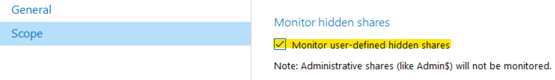
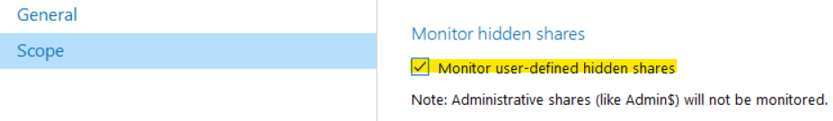

How do I monitor hidden file shares?
If you specified Computer as an Item in the Netwrix Auditor for Windows File Servers data source, the product will monitor all available file shares on that server, except for the hidden ones (ending with $ sign). If you want to monitor a specific hidden share, you need to add it explicitly, specifying its full UNC path, e.g. \\server\hiddenshare$
If you would like to audit all hidden shares on the server, check the corresponding option at the Scope tab of your Computer item:

NOTE: It is not recommended to specify the system drive (\server\c$) as an Item. This will force Netwrix to audit local folders including the system ones that produce a lot of noise and degrade the product performance.
If you specified Computer as an Item in the Netwrix Auditor for Windows File Servers data source, the product will monitor all available file shares on that server, except for the hidden ones (ending with $ sign). If you want to monitor a specific hidden share, you need to add it explicitly, specifying its full UNC path, e.g. \\server\hiddenshare$
If you would like to audit all hidden shares on the server, check the corresponding option at the Scope tab of your Computer item:

NOTE: It is not recommended to specify the system drive (\server\c$) as an Item. This will force Netwrix to audit local folders including the system ones that produce a lot of noise and degrade the product performance.